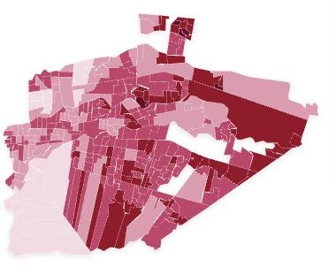
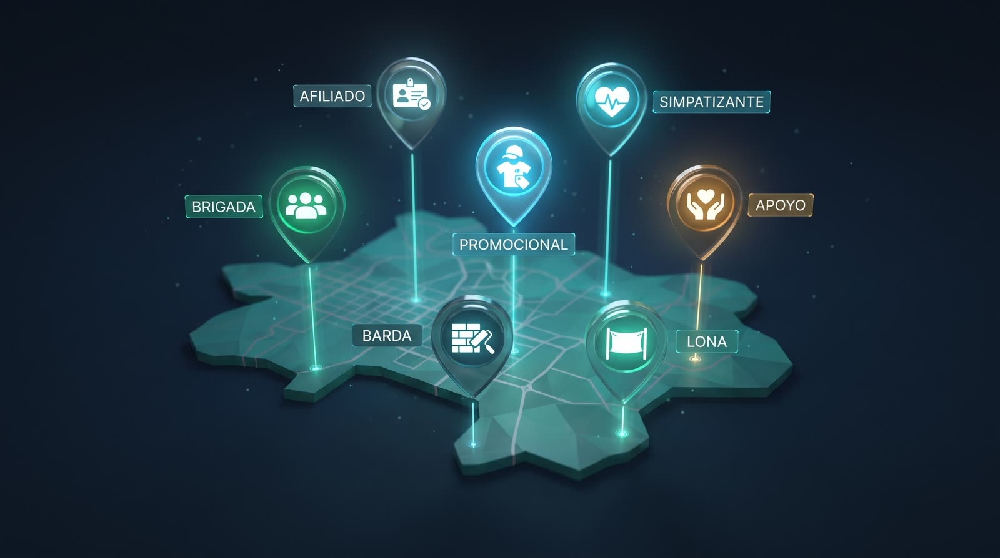
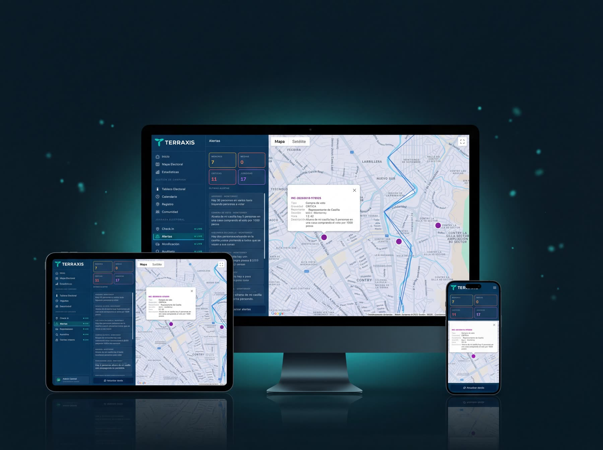

Inteligencia territorial para decidir con certeza.
Convertimos información pública en inteligencia accionable —mapas, modelos y salas de mando— para gobiernos, instituciones y campañas. Una sola plataforma sobre el territorio.
Una plataforma. Dos verticales.
Diez soluciones. Un núcleo de datos.
Nadie en México ni en América Latina integra en una sola plataforma la inteligencia territorial, la electoral, la IA de decisión y la operación. TERRAXIS ocupa ese espacio.
De la información pública a la inteligencia propia
Insumos públicos
Resultados electorales y datos geográficos abiertos de INEGI e INE (Excel, CSV, JSON, GeoJSON).
Interpretación propia
Analítica, inteligencia artificial y automatización que procesan y modelan los datos.
Productos derivados
Capas, mapas de calor, dashboards y modelos territoriales: activos e IP de TERRAXIS.
Operamos con datos agregados. Sin padrón ni lista nominal. No redistribuimos cartografía oficial.
Control total. Inteligencia real.
Un ecosistema de inteligencia para el territorio y la elección.
TERRAXIS es una empresa GovTech de inteligencia territorial y electoral. Existe para cerrar la distancia entre la enorme cantidad de información que producen los territorios y la calidad de las decisiones que se toman sobre ellos.
Misión
Ayudar a gobiernos, instituciones, campañas y organizaciones políticas a decidir mejor, con tecnología, inteligencia artificial, automatización y análisis territorial. No vendemos software: elevamos la calidad de la decisión pública y política.
Visión
Ser la principal empresa GovTech de América Latina en inteligencia territorial y electoral, automatización gubernamental e inteligencia artificial para decisiones públicas.
Principios innegociables
No partidismo
Aportamos método, tecnología y evidencia; no tomamos partido. Servimos a fuerzas distintas y a instituciones de cualquier signo.
Verdad sobre el dato
Información pública, productos derivados propios, datos agregados. Sin padrón ni lista nominal.
Control e integridad
El cliente conserva el control de sus datos; nosotros garantizamos trazabilidad, gobernanza y resguardo.
Evidencia sobre intuición
Ninguna afirmación sin fuente; ninguna estimación sin metodología. Decidir con certeza, no con corazonada.
Software, ley y estrategia. Un solo equipo, de tu lado.
Desarrolladores de software
La plataforma, la IA y la integración de datos, construidas y mantenidas en casa.
Abogados electorales
Defensa jurídica del voto con expertos: cada incidencia se vuelve prueba.
Consultores políticos
Estrategia territorial que traduce la inteligencia en decisiones que ganan.
Del análisis del territorio a la defensa del voto.
Acompañamos el ciclo completo de una campaña —planeación, operación, jornada y representación— con inteligencia por sección y casilla que ningún actor integra en una sola plataforma.
Conoce tu territorio antes de pisarlo.
GIS, mapas de calor, competitividad y scoring por sección con dashboard en tiempo real. De información pública a inteligencia propia, accionable y defendible.
- Analítica geoespacial
- Scoring por sección
- Mapas de competitividad
- Dashboard en vivo

Toda tu estructura, viva y bajo control.
Geolocalización y auditoría de eventos y recursos, agenda inteligente, registro de simpatizantes, ChatBot 24/7, lectura de identificaciones con IA y comunicación con toda la estructura.
- Brigadas en tiempo real
- Agenda inteligente
- Registro y lectura con IA
- Fiscalización

Todo tu operativo del Día D, bajo control.
Registro y auditoría de representantes de casilla, incidencias georreferenciadas que se vuelven escritos y denuncias con IA y un abogado electoral, movilización territorial, lectura de resultados y War Room.
- Representantes de casilla
- Incidencias → escritos con IA
- Revisión de abogado electoral
- Movilización
- War Room
Las soluciones de la vertical Electoral
Inteligencia Electoral y Territorial
Historia electoral, contexto socioeconómico y predicción: scoring seccional y recomendación de estrategia.
Operación Territorial de Campaña
Estructura de campo viva y geolocalizada, rutas, encuestas y chatbot del candidato 24/7.
Transparencia, Fiscalización y Auditoría
Contabilidad automatizada, control de topes en vivo y auditoría independiente de lo reportado.
Día de la Elección y War Room
Sala de mando, defensa del voto, incidencias georreferenciadas, conteo interno y movilización con IA.
Marketing Político e Inteligencia de Comunicación
Contenido con IA, social listening por territorio y respuesta a desinformación y deepfakes.
Inteligencia Legislativa
Observatorio territorial permanente, agenda asistida por datos y tablero de cumplimiento de promesas.
TERRAXIS GeoBase
La capa de inteligencia territorial siempre disponible —"el Bloomberg territorial"— por suscripción.
¿Por qué elegir TERRAXIS?
| Capacidad | TERRAXIS | Sistema electoral común | Herramientas básicas |
|---|---|---|---|
| Inteligencia territorial y electoral | ✓ Completo | ~ Parcial | ✕ No |
| Gestión de campaña (estructura, agenda, IA) | ✓ Completo | ~ Parcial | ~ Parcial |
| Jornada electoral (RCs, incidencias, War Room) | ✓ Completo | ✕ No | ✕ No |
| Consultoría integral: software + ley + estrategia | ✓ Completo | ✕ No | ✕ No |
✓ Completo · ~ Parcial · ✕ No disponible
Gobernar con evidencia territorial.
La misma inteligencia del territorio, al servicio de la gestión pública: atención ciudadana rastreable, una sola fuente de verdad del territorio y digitalización que libera la información atrapada en el papel —siempre bajo control institucional del cliente.
IA y Atención Ciudadana (311 inteligente)
Cada solicitud ciudadana se vuelve una acción rastreable y cada trámite una experiencia ágil: recepción multicanal, clasificación, geolocalización y ruteo con IA, Trámites Cero y copiloto del funcionario.
- 311 inteligente
- Trámites Cero
- Ruteo con IA
- Ticket con seguimiento
Inteligencia Territorial de Gobierno
Analítica territorial para la decisión pública: gemelo digital municipal, centro de inteligencia, seguridad predictiva, focalización social por colonia o AGEB, e inteligencia para inversión pública, obra, recaudación y catastro.
- Gemelo digital municipal
- Seguridad predictiva
- Focalización social
- Obra pública con IA
Plataformas y Digitalización
La base tecnológica del gobierno moderno: plataformas gubernamentales a la medida y digitalización con IA que convierte el papel en dato estructurado, con clasificación y automatización documental.
- Plataformas a la medida
- Del papel al dato
- Automatización documental

TERRAXIS GeoBase
La capa de inteligencia territorial que alimenta las diez soluciones. Ingiere fuentes públicas, genera capas derivadas propias y acumula resultados, incidencias y patrones a nivel de sección y casilla —elección tras elección—. Es el activo que un competidor no puede copiar: la analítica y la operación, no el dato en bruto.
La escuela de estrategia, anclada a datos.
No es una vertical de software: es la capa de servicio experto que orquesta la plataforma y garantiza que cada recomendación esté sustentada en territorio y evidencia, no en percepciones. Abre puerta a clientes que primero compran criterio y después tecnología, y eleva el valor de cada cuenta.

¿Cómo empezar?
Agenda tu demo
Te mostramos la plataforma y te entregamos un análisis del territorio de tu interés.
Diagnóstico y cotización a la medida
Definimos alcance por solución y armamos una propuesta ajustada a tu proyecto.
Piloto y despliegue
Arrancamos con un piloto, capacitamos a tu equipo y escalamos.
Deja de operar a ciegas.
Obtén la seguridad, eficiencia, orden, inteligencia y transparencia que tu gobierno o campaña merece. Cuéntanos de tu proyecto y te entregamos un análisis inicial.